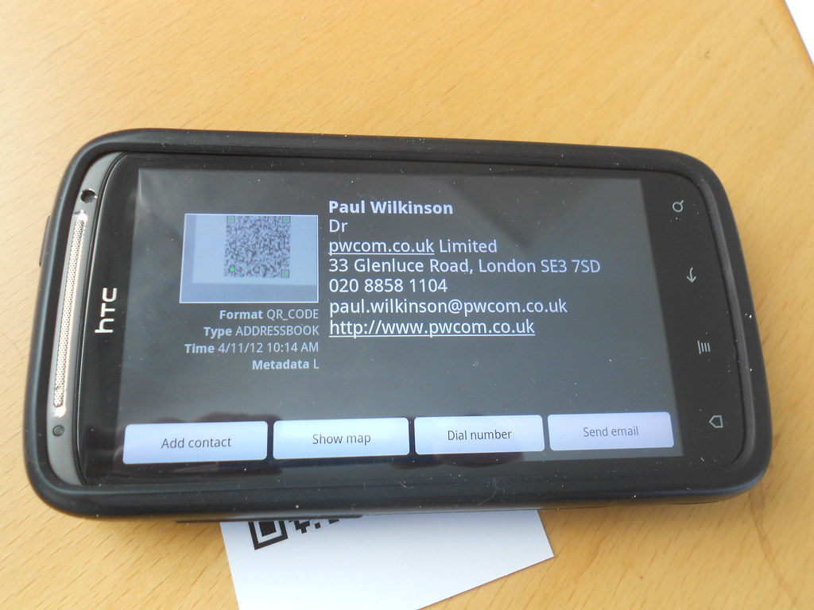

Saudi Arabia is unusual in that the roadmap arrived before the market finished building. Vision 2030 put money, deadlines and a national agenda behind financial services, and now banks, wallet operators and lenders are hiring faster than they can interview. A search for a Saudi Vision 2030 fintech API developer India returns plenty of profiles; what separates them is regulatory fit and delivery discipline, not headcount.
Viantha Solutions builds API and backend software for banks, neobanks and payment companies out of Tiruchirappalli in Tamil Nadu, with our headquarters in Singapore. This guide covers what Saudi fintechs hand over to an offshore team, how SAMA and its sandbox shape the work, what Mada means for a payment build, where Islamic banking changes the design, and how localisation rules affect who does what.
The same applies to a digital banking platform Saudi Arabia launches: SAMA's expectations on onboarding, reporting and data residency are architecture decisions, not paperwork handled at the end.
Key Takeaways
- SAMA, the Saudi Central Bank, regulates banks and fintechs and runs the sandbox that decides what you can test before launch.
- Mada is the national payment scheme. Domestic debit and card acceptance runs through it, and the edge cases live in the scheme rules.
- Islamic banking products need Sharia board approval, so profit-sharing logic is a product decision as much as a code decision.
- Saudisation expectations under Nitaqat mean foreign teams work alongside Saudi staff, not in place of them.
In This Guide
What Saudi Fintechs Actually Hand Over
Three categories come up in almost every conversation. Each one is integration work with a clear contract at the edge.
Neobank and wallet backends
Consumer expectations in the Kingdom are set by wallet apps that already feel fast, so new entrants get judged on onboarding speed and transaction status clarity. A Saudi neobank software developer India team usually starts on the account and ledger services, the transaction history that must never disagree with itself, and the notification layer behind it. That is where our API integration work starts on these engagements.
Onboarding, AML and KYC
Identity checks, sanctions and PEP screening, risk scoring and case management, then the record retention that a supervisor will ask for later. A Saudi AML KYC software developer needs to understand that the case file is the product, not a database table bolted on at the end.
Payment and card flows
Mada transaction flows, 3-D Secure step-up, aggregator and settlement reconciliation. Also the payout side: payroll transfers, refund cycles and the batch jobs that clear overnight.
SAMA and the Regulatory Sandbox
SAMA, the Saudi Central Bank, is the regulator for banks, insurance companies, payment companies and fintechs. Its open banking framework sets out the API standards and consent rules that a SAMA Open Banking API integration India build has to satisfy: consent capture and revocation, scoped access, standardised error handling, and auditability of who read what.
The sandbox exists so you can test a new model under reduced requirements before full authorisation. It is a genuine advantage, and it is also where timelines slip. Sandbox entry involves documentation, a risk assessment and review cycles that do not move at sprint pace. The honest version: regulatory approval takes longer than the pitch deck suggests, usually by a quarter. Plan your build so that engineering continues in your own environment while approvals run in parallel.
Vendor questionnaires will also reference cybersecurity expectations from SAMA and the National Cybersecurity Authority. Budget a security review in month one, not the week before launch.
Mada and the Domestic Payment Rails
Mada is the national payment scheme, and it is the centre of gravity for domestic card and point-of-sale traffic. For a developer that means scheme rules around tokenisation, 3-D Secure authentication, merchant category handling and settlement windows. The Mada switching layer and the acquirer behave differently in test and live, which is the usual source of surprises in week three of a Mada payment API integration India build.
An STC Pay API integration developer will tell you what consumer wallets already taught the market: instant confirmation is the baseline, so a payment API that returns only pending is going to generate support tickets. Get the status model right before the launch marketing, not afterwards.

Vision 2030 and Where the Funding Goes
Vision 2030 is the national transformation programme, and financial services sits inside it through the financial sector development work: more competition, more digital channels, and a push to raise household savings and insurance penetration. That programme is why capital moves in this market in waves, and why a project that starts with a large budget can still pause when a giga-project re-prioritises.
For an offshore team the practical effect is scope discipline. We write assumptions into the scope, keep the pilot small enough to finish, and expand once your internal funding round confirms. It is less exciting than a big-bang programme and it survives contact with procurement.
Islamic Banking and Sharia-Approved Product Logic
A large share of the Saudi market is Islamic banking, and that changes code in specific ways. Products are structured around profit-sharing and cost-plus arrangements such as mudarabah and murabaha rather than interest, so the calculation engine has to be explicit: how profit is split, what fee is charged, what happens on early settlement, and how a transaction is presented in a statement.
Every product needs approval from a Sharia board before it ships, and an Islamic banking API developer India engagement only works when those approved rules become configuration and test cases rather than being buried in a developer's if-statements. Reference standards from AAOIFI give auditors something to check against. Build the compliance officer a screen that traces any number back to the agreed rule, and product approval conversations get shorter.
Localisation, Workforce and Hours
There is a large Indian IT presence in the Kingdom, and Riyadh, Jeddah and Dammam host delivery centres staffed by Indian engineers alongside Saudi colleagues. An Indian IT company Saudi Arabia projects conversation should be honest about one thing: Nitaqat and Saudisation expectations mean Saudi roles are filled by Saudi nationals in defined proportions. Foreign teams work alongside them rather than instead of them, and most engagements we see have an onshore Saudi lead handling requirements, review and regulator communication.
Hours are easy. Arabian standard time is two and a half hours behind India, so our morning covers most of the Saudi working day, and the Saudi week runs Sunday to Thursday with Friday and Saturday as the weekend. We set the overlap window in writing at the start.
The unglamorous observation: document turnaround, not code, is usually the critical path on Saudi projects. Names on contracts, attested credentials, access approvals and bank environment provisioning each take days. Start those in week one alongside discovery.
FAQs Saudi Clients Ask Us
Which Indian company builds SAMA API software for Saudi fintechs?
Viantha Solutions does this work: SAMA open banking consent and account APIs, Mada payment integration, Islamic banking calculation engines and AML and KYC pipelines. We are based in Trichy, Tamil Nadu, with our headquarters in Singapore, and we run a fixed overlap window so Saudi morning hours have live engineering time.
Can you integrate Mada payment APIs into an existing backend?
Yes. Transaction initiation, tokenised card flows, 3-D Secure step-up and settlement reconciliation are integrated into existing Spring Boot or Node services. The work that takes time is exception handling and reconciliation, because scheme, acquirer and issuer states do not always agree.
Do you build Islamic banking product logic?
We build profit-sharing and cost-plus calculation engines with the approved parameters exposed as configuration, so a Sharia board or compliance officer can verify the maths without reading code. Every rule becomes a test case, which also makes later product changes cheaper.
How does Saudisation affect an offshore team working on Saudi projects?
It shapes the team structure. Saudi roles stay with Saudi staff, offshore engineers handle build and maintenance under an onshore lead, and responsibilities are written down early so nobody is guessing. If you would like to see how that maps onto your roadmap, review our engagement models or send us the scope you have.
Talk to an Engineer, Not a Sales Rep
Describe the integration you need and the system it has to fit into. we will tell you honestly what it takes and whether we are the right team for it.
Start a Conversation Explore Services